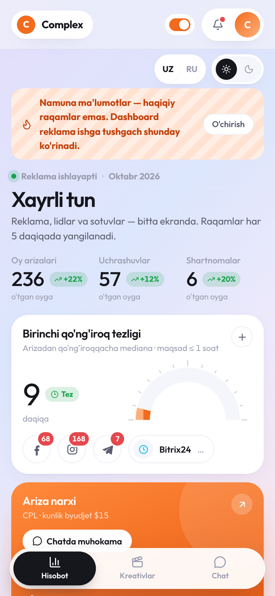
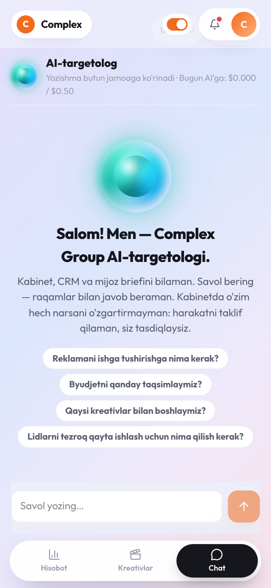
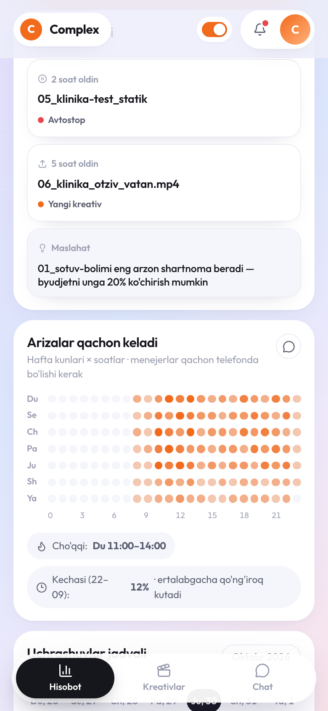
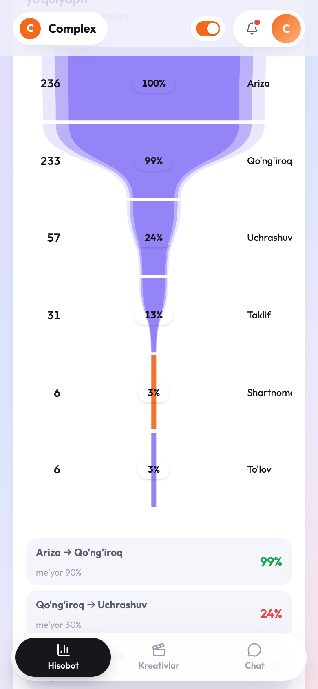
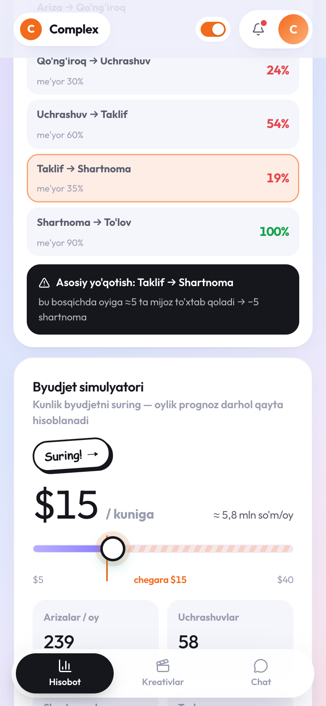
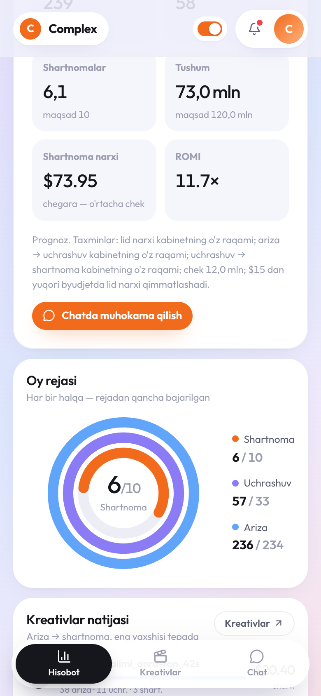
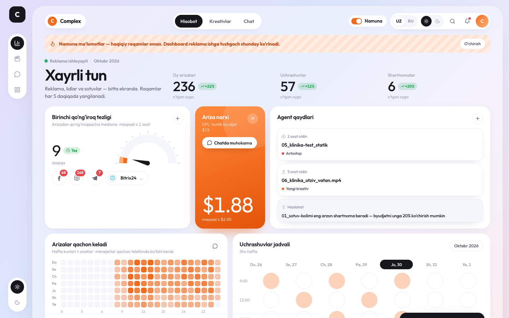
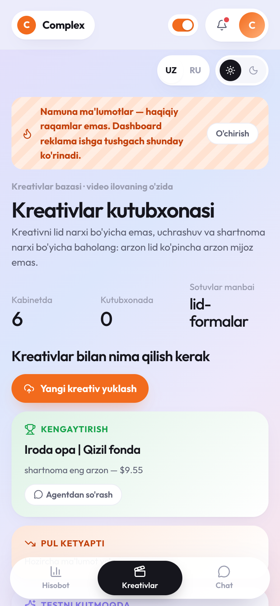

Reklamani AI-targetolog bilan boshqarishКак управлять рекламой вместе с AI-таргетологом
Complex Group reklamasi endi o'zi ishlaydigan tizim: Telegram-bot, dashboard va kabinetni hamda mijoz briefini biladigan AI-targetolog. Bu qo'llanma — 20 daqiqada uni to'liq ishlatishni o'rganish uchun. Har bo'lim oxirida amaliy topshiriq bor.Реклама Complex Group теперь — система, которая работает сама: Telegram-бот, дашборд и AI-таргетолог, который знает кабинет и бриф компании. Это руководство — чтобы за 20 минут научиться пользоваться ей полностью. В конце каждой главы — практическое задание.


Tizim nimadan iboratИз чего состоит система
To'rt qism — har biri o'z vazifasini bajaradi. Hammasi serverda 24/7 ishlaydi: hech kimning kompyuteri yoqiq turishi shart emas.Четыре части — у каждой своя задача. Всё работает на сервере 24/7: ничей компьютер не должен быть включён.
Telegram-botTelegram-бот
@complexadsagent_bot. Yangi lidlar, ertalabki hisobot, ogohlantirishlar o'zi keladi. Buyruqlar bilan kabinet holatini ko'rasiz.@complexadsagent_bot. Сам присылает новые заявки, утренний отчёт и тревоги. Командами смотрите состояние кабинета.
Dashboard (Mini App)Дашборд (Mini App)
Botdagi «📊» tugmasi. Reklama, lidlar, uchrashuvlar va shartnomalar — bitta ekranda, Facebook va Bitrix24 dan jonli.Кнопка «📊» в боте. Реклама, заявки, встречи и договоры — на одном экране, вживую из Facebook и Bitrix24.
AI-targetologAI-таргетолог
Dashboard ichidagi «Chat». Meta Ads bilimlar bazasi, kompaniya briefi va kabinet raqamlarini biladi. Savolga javob beradi, harakat taklif qiladi.Вкладка «Chat» в дашборде. Знает базу Meta Ads, бриф компании и цифры кабинета. Отвечает на вопросы, предлагает действия.
Claude (dasturchi)Claude (разработчик)
Botda /claude buyrug'i. Murakkab savollar, yangi funksiyalar, xatolar — agentni yaratgan Claude'ga to'g'ridan-to'g'ri.Команда /claude в боте. Сложные вопросы, новые функции, ошибки — напрямую Claude, который собрал агента.
5 daqiqada boshlashСтарт за 5 минут
Botni ochingОткройте бота
Telegramda @complexadsagent_bot ni toping va /start bosing.Найдите в Telegram @complexadsagent_bot и нажмите /start.
Kirishni olingПолучите доступ
Bot yopiq — faqat jamoa uchun. Begona odam yozsa, adminlarga (Damir, Muhammadbobur) «✅ Впустить» tugmasi keladi. Admin bosgach, bot sizga «Kirish ochildi» deb yozadi.Бот закрытый — только для команды. Если пишет новый человек, админам (Дамир, Мухаммадбобур) приходит кнопка «✅ Впустить». Админ нажал — бот пишет вам «Доступ открыт».
Tilni tanlangВыберите язык
🇺🇿 yoki 🇷🇺. Bot ismingizni Telegramdan oladi va buyruqlar menyusini ko'rsatadi. Tilni keyin /lang bilan o'zgartirish mumkin.🇺🇿 или 🇷🇺. Бот возьмёт имя из Telegram и покажет меню команд. Язык можно сменить потом командой /lang.
Dashboardni ochingОткройте дашборд
Xabar yozish maydonining chap tomonidagi «📊» tugmasi. Telegram ichida parolsiz ochiladi. Pastda uchta bo'lim: Hisobot · Kreativlar · Chat.Кнопка «📊» слева от поля ввода сообщения. Внутри Telegram открывается без пароля. Внизу три вкладки: Отчёт · Креативы · Чат.
Telegram-botTelegram-бот
Bot ikki ish qiladi: o'zi xabar beradi va buyruqlarga javob beradi.Бот делает две вещи: сам сообщает о важном и отвечает на команды.
O'zi nima yuboradiЧто присылает сам
Avtomatik xabarlarАвтоматические сообщения
| 🔥 | Yangi lid — har 2 daqiqada formalardan olinadi: ism, telefon, javoblar, qaysi kreativdan.Новая заявка — забирается из форм каждые 2 минуты: имя, телефон, ответы, с какого креатива. |
| 09:00 | Ertalabki hisobot — kecha nima bo'ldi, eng yaxshi va eng yomon kreativ, bitta asosiy tavsiya.Утренний отчёт — что было вчера, лучший и худший креатив, одна главная рекомендация. |
| 🚨 | To'lov muammosi — har 30 daqiqada kabinet holati tekshiriladi. Qarz yoki bloklanish bo'lsa — darhol hammaga.Проблема с оплатой — каждые 30 минут проверяется статус кабинета. Долг или блокировка — сразу всем. |
| ⚠️ | Kam sarf — 12:00–21:00 oralig'ida kunlik byudjetning 10% dan kami sarflangan bo'lsa: reklama «aylanmayapti».Низкий расход — если с 12:00 до 21:00 потрачено меньше 10% бюджета: реклама «не крутится». |
| ⛔️ | Avtostop — pul ketayotgan e'lon to'xtatildi (07-bo'lim).Автостоп — сливающее объявление остановлено (глава 07). |
BuyruqlarКоманды
| /check | Hozirgi holat: akkaunt faolmi, bugun qancha sarflandi, nechta lid.Состояние сейчас: активен ли кабинет, сколько потрачено сегодня, сколько заявок. |
| /report | Kechagi hisobot AI tahlili bilan.Отчёт за вчера с AI-разбором. |
| /actions | Hozir nima qilish kerak — raqamlar bilan tavsiyalar.Что делать сейчас — рекомендации с цифрами. |
| /forecast | Oy oxirigacha prognoz: lidlar, byudjet, CPL.Прогноз до конца месяца: заявки, бюджет, CPL. |
| /topkilla | Eng yaxshi e'lonlar va to'xtatishga nomzodlar.Лучшие объявления и кандидаты на паузу. |
| /insights | 7 kunlik kuzatuvlar.Наблюдения за 7 дней. |
| /claude | Claude'ga yozish — agent dasturchisiga (06-bo'lim oxiri).Написать Claude — разработчику агента (конец главы 06). |
| /team | Xodimlar: kimda kirish bor. Admin bu yerda odamni olib tashlaydi.Сотрудники: у кого есть доступ. Админ здесь же убирает человека. |
| /lang · /reset | Tilni o'zgartirish · qaytadan boshlash.Сменить язык · начать заново. |
Dashboard: HisobotДашборд: Отчёт
Har bir blok bitta savolga javob beradi va harakatga olib keladi. «Bezak uchun» blok yo'q.Каждый блок отвечает на один вопрос и ведёт к действию. Блоков «для красоты» нет.
Asosiy raqamlar va qo'ng'iroq tezligiГлавные цифры и скорость звонка
- 📈 Oylik arizalar · uchrashuvlar · shartnomalar — o'tgan oyga nisbatan o'sish (+22%) yoki pasayish.Заявки · встречи · договоры за месяц — рост (+22%) или падение к прошлому месяцу.
- ⏱ Birinchi qo'ng'iroq tezligi — arizadan qo'ng'iroqqacha mediana. Maqsad — 1 soatdan kam. «Sekin» chiqsa — muammo reklamada emas, qayta ishlashda.Скорость первого звонка — медиана от заявки до звонка. Цель — меньше часа. «Медленно» — проблема не в рекламе, а в обработке.
- 🟠 Ariza narxi (CPL) — rejaga nisbatan ($2 gacha).Цена заявки (CPL) — против плана (до $2).
- 📝 Agent qaydlari — avtostoplar, yangi kreativlar va asosiy maslahat.Заметки агента — автостопы, новые креативы и главный совет.

Arizalar qachon keladiКогда приходят заявки
Hafta kunlari × soatlar. To'q rang — arizalar ko'p. Pastda: cho'qqi (menejerlar albatta telefonda bo'lishi kerak) va tungi arizalar ulushi — ular ertalabgacha qo'ng'iroq kutadi. Tungi ulush yuqori bo'lsa — chat tugmasi orqali agentdan tungi ko'rsatishlarni so'rang.Дни недели × часы. Тёмный цвет — много заявок. Внизу: пик (менеджеры обязательно на телефоне) и доля ночных заявок — они ждут звонка до утра. Если ночная доля высокая — спросите агента про ночные показы кнопкой чата.

Voronka: lid qayerda yo'qolyaptiВоронка: где теряются заявки
Ariza → Qo'ng'iroq → Uchrashuv → Taklif → Shartnoma → To'lov. Har bir qadam me'yor bilan solishtiriladi (masalan, qo'ng'iroqdan uchrashuvga — 30%). Qizil — me'yordan past.Заявка → Звонок → Встреча → КП → Договор → Оплата. Каждый шаг сравнивается с нормой (например, от звонка до встречи — 30%). Красный — ниже нормы.
Asosiy yo'qotish to'q sariq bilan belgilanadi — u qancha shartnoma yo'qotayotganiga qarab tanlanadi. «Nega va nima qilish kerak?» tugmasi raqamlarni agentga yuboradi.Главная утечка подсвечена оранжевым — выбирается по тому, сколько договоров она стоит. Кнопка «Почему и что делать?» отправляет цифры агенту.

Byudjet simulyatoriСимулятор бюджета
Slayderni $5 dan $40 gacha suring — oylik arizalar, uchrashuvlar, shartnomalar, tushum va shartnoma narxi darhol qayta hisoblanadi. $15 dan yuqori zona chiziqli — bu shift, undan yuqori faqat asoschi roziligi bilan. Simulyator kabinetda hech narsani o'zgartirmaydi.Тяните слайдер от $5 до $40 — заявки, встречи, договоры, выручка и цена договора за месяц пересчитываются сразу. Зона выше $15 заштрихована — это потолок, выше только с согласия основателя. Симулятор ничего не меняет в кабинете.

Oy rejasi va boshqalarПлан месяца и остальное
- ⭕ Halqalar — shartnoma, uchrashuv va arizalar rejaning qancha qismi bajarildi (maqsad: oyiga 10 shartnoma, 120 mln).Кольца — сколько договоров, встреч и заявок сделано от плана (цель: 10 договоров и 120 млн в месяц).
- 📅 Uchrashuvlar jadvali — shu haftaga Bitrix24 dagi uchrashuvlar.Расписание встреч — встречи этой недели из Bitrix24.
- 📉 Samaradorlik grafigi — kunlar bo'yicha arizalar va CPL.График эффективности — заявки и CPL по дням.
- 🏅 Menejerlar reytingi — kim qancha uchrashuv va shartnoma qildi (Bitrix24 da lidlar menejerlarga taqsimlanganda ishlaydi).Рейтинг менеджеров — у кого сколько встреч и договоров (работает, когда лиды распределяются на менеджеров в Bitrix24).

Kompyuterda dashboard bitta ekranda ko'rinadi.На компьютере дашборд виден одним экраном.
Kreativlar bazasiБаза креативов

Kabinetdagi barcha videolar va yuklangan yangilari — bitta joyda, ilova ichida o'ynaydi. Har bir kreativ uchun: sarf, lidlar, CPL, musor, uchrashuv narxi va shartnoma narxi. Kreativni lid narxi bo'yicha emas, shartnoma narxi bo'yicha baholang — arzon lid ko'pincha arzon mijoz emas.Все видео кабинета и новые загруженные — в одном месте, проигрываются прямо в приложении. У каждого: расход, заявки, CPL, мусор, цена встречи и цена договора. Оценивайте креатив по цене договора, а не заявки — дешёвая заявка часто не дешёвый клиент.
Shartnoma eng arzon kreativ.Креатив с самым дешёвым договором.
Sarflangan, lekin shartnoma yo'q.Тратит, а договоров нет.
Yuklangan, reklamada emas.Загружены, но не в рекламе.
Yangi kreativni qanday yuklashКак загрузить новый креатив
Kreativlar → «Yangi kreativ yuklash»Креативы → «Загрузить креатив»
Videoni tanlang, yo'nalishni (Sotuv bo'limi / Klinika) va qisqa izoh yozing: kim uchun, qaysi xuk, nimani sinaymiz.Выберите видео, направление (Отдел продаж / Клиники) и короткую заметку: для кого, какой хук, что проверяем.
Hajm cheklanmaganРазмер не ограничен
100–250 MB li videolar ham bo'laklab yuklanadi, progress ko'rinadi, internet uzilsa — joyidan davom etadi. Video to'g'ridan-to'g'ri reklama kabinetiga tushadi.Ролики по 100–250 МБ грузятся частями, виден прогресс, при обрыве связи — продолжится с места. Видео попадает сразу в рекламный кабинет.
«Taklif qilish» → chat«Предложить запуск» → чат
Kartochkadagi tugma agentga savol ochadi: qaysi guruhga va qanday test qilish. Reklamaga qo'yish — tasdiqlashdan keyin.Кнопка на карточке открывает вопрос агенту: в какую группу и как тестировать. В рекламу — после подтверждения.
AI-targetolog bilan chatЧат с AI-таргетологом
U nimani biladiЧто он знает
- 📚 Meta Ads 2026 bilimlar bazasi (31 manba), Hormozi iqtisodiyoti, targetolog bazasi.База знаний Meta Ads 2026 (31 источник), экономика Hormozi, база таргетолога.
- 🏢 Complex briefi: xizmatlar, o'rtacha chek 14,4 mln, maqsad — oyiga 10 shartnoma, e'tirozlar, takliflar.Бриф Complex: услуги, средний чек 14,4 млн, цель — 10 договоров в месяц, возражения, офферы.
- 📊 Jonli raqamlar: kabinet, Bitrix24 dagi lidlar, kreativlar, avtostoplar.Живые цифры: кабинет, лиды в Bitrix24, креативы, автостопы.
U nima qila oladiЧто он может
Javob beradi, tahlil qiladi, matn yozadi va harakat taklif qiladi — tugma bilan. O'zi kabinetda hech narsani o'zgartirmaydi: e'lonni to'xtatish yoki byudjetni o'zgartirish faqat siz «Tasdiqlash» ni bosganingizdan keyin. Yozishmani butun jamoa ko'radi.Отвечает, анализирует, пишет тексты и предлагает действия — кнопкой. Сам в кабинете ничего не меняет: пауза объявления или изменение бюджета — только после вашего «Подтвердить». Переписку видит вся команда.
Nimalarni so'rash mumkin (bosing — nusxa olinadi)Что можно спрашивать (нажмите — скопируется)
Misol: «Kuniga $1000 qo'yamiz»Пример: «Давай $1000 в день»
Nima uchun bunday javobПочему такой ответ
Agent itoatkorlikdan ko'ra mijoz pulini muhimroq deb hisoblaydi. Yomon g'oyaga «xo'p» demaydi — raqamlar bilan tushuntiradi va xavfsiz variant taklif qiladi. Hatto kimdir tasdiqlash tugmasini bossa ham, server $15 dan yuqori yoki bir kunda 30% dan ortiq oshirishni rad etadi.Для агента деньги клиента важнее послушности. На плохую идею он не говорит «хорошо» — объясняет на цифрах и предлагает безопасный вариант. Даже если кто-то нажмёт кнопку подтверждения, сервер отклонит бюджет выше $15 или рост больше 30% за сутки.
Haqiqiy javobЭто реальный ответ
Yuqoridagi javob — agentni tekshirishda olingan, o'ylab topilmagan.Ответ выше получен при проверке агента, а не придуман.
/claude — dasturchiga savolвопрос разработчику
AI-targetolog — reklama haqidagi savollar uchun. Agentning o'zi haqida savol — yangi funksiya kerak, nimadir ishlamayapti, dashboardga blok qo'shish — botda /claude va savolni yozing. U agentni yaratgan Claude'ga keladi, javob shu botga qaytadi.AI-таргетолог — для вопросов о рекламе. Вопрос о самом агенте — нужна новая функция, что-то не работает, добавить блок в дашборд — пишите в боте /claude и вопрос. Он придёт Claude, который собрал агента, ответ вернётся в этот же бот.
⚠️ Javob darhol kelmasligi mumkin: Claude Damirning ishchi kompyuteri yoqiq bo'lganda javob beradi. Savol yo'qolmaydi — navbatda kutadi.⚠️ Ответ может прийти не сразу: Claude отвечает, когда включён рабочий компьютер Дамира. Вопрос не потеряется — ждёт в очереди.
Chegaralar va xavfsizlikГраницы и безопасность
Shift — $15/kunПотолок — $15/день
Briefdagi oyiga ~6 mln so'm. Undan yuqori — faqat Muhammadbobur «ha» degandan keyin, shiftni Damir o'zgartiradi.≈ 6 млн сум в месяц по брифу. Выше — только после «да» Мухаммадбобура, потолок меняет Дамир.
Qadam — 30% gachaШаг — до 30%
Byudjet kuniga 30% dan ko'p o'zgarmaydi, guruhga kuniga bitta o'zgarish. Aks holda Facebook qayta o'rganadi va CPL oshadi.Бюджет меняется не больше чем на 30% в сутки и не чаще раза в день на группу. Иначе Facebook переобучается и CPL растёт.
Kuchli o'zgarishlarСильные изменения
Yangi kampaniya, taklif, geo yoki auditoriyani o'zgartirish — faqat asoschi roziligi bilan.Новая кампания, смена оффера, гео или аудитории — только с согласия основателя.
⛔️ Avtostop qoidalari (har 30 daqiqada)Правила автостопа (каждые 30 минут)
| $6+, 0 | E'lon maqsadli CPL ning 3 baravari ($6) sarflab, birorta ariza bermagan bo'lsa — to'xtatiladi.Объявление потратило 3 целевых CPL ($6) и не дало ни одной заявки — пауза. |
| $12+, CPL > $6 | $12 sarfdan keyin ariza $6 dan qimmat — to'xtatiladi.После $12 расхода заявка дороже $6 — пауза. |
| oxirgisiпоследнее | Guruhdagi oxirgi faol e'lonni agent o'zi to'xtatmaydi (guruh to'liq to'xtab qoladi) — odamlardan so'raydi.Последнее активное объявление в группе агент сам не выключает (встанет вся группа) — спрашивает людей. |
Kritik vaziyatlarКритические ситуации
Nima bo'lganda bot xabar beradi va siz nima qilasiz.Когда бот сообщит и что делать вам.
🚨 Reklama to'lov tufayli to'xtadiРеклама встала из-за оплаты
Bot:Бот: «KRITIK — akkauntda muammo», 30 daqiqa ichida.«КРИТИЧНО — проблема с аккаунтом», в течение 30 минут.
Siz:Вы: Business Manager → Billing → qarzni to'lang. E'lonlar «faol» ko'rinishi mumkin, lekin sarf $0 bo'ladi — xabarga ishoning.Business Manager → Биллинг → оплатите долг. Объявления могут выглядеть «активными», но расход $0 — верьте сообщению.
⚠️ Reklama «aylanmayapti»Реклама «не крутится»
Bot:Бот: «Kam sarf» — kunduzi byudjetning 10% dan kami.«Низкий расход» — днём меньше 10% бюджета.
Siz:Вы: /check, keyin chatda «Nega reklama aylanmayapti?» deb so'rang: moderatsiya, to'lov, auditoriya./check, затем спросите в чате «Почему реклама не крутится?»: модерация, оплата, аудитория.
⛔️ Avtostop ishladiСработал автостоп
Bot:Бот: qaysi e'lon, qancha sarflangan, sabab.какое объявление, сколько потрачено, причина.
Siz:Вы: hech narsa — pul tejaldi. Qaytarmoqchi bo'lsangiz, chatda «… ni qaytar» deng va sababini muhokama qiling.ничего — деньги сэкономлены. Хотите вернуть — напишите в чате «включи … обратно» и обсудите причину.
⏱ Lidlar sovuyaptiЗаявки остывают
Qayerda:Где: dashboardda «Birinchi qo'ng'iroq tezligi» — «Sekin».в дашборде «Скорость первого звонка» — «Медленно».
Siz:Вы: byudjetni emas, qo'ng'iroqni tuzating: ariza kelgan zahoti — qo'ng'iroq. 5 daqiqadagi qo'ng'iroq bir soatdagidan bir necha barobar ko'p sotadi.чините не бюджет, а звонки: пришла заявка — сразу звонок. Звонок через 5 минут продаёт в разы лучше, чем через час.
📭 Lidlar kelmayaptiЗаявки не приходят
Siz:Вы: /check — sarf bormi? Sarf bor, lid yo'q — chatda tahlil so'rang. Sarf yo'q — yuqoridagi «aylanmayapti» holati./check — есть ли расход? Расход есть, заявок нет — попросите разбор в чате. Расхода нет — случай «не крутится» выше.
🔐 Yangi xodim / ketgan xodimНовый / ушедший сотрудник
Yangi: botga /start yozadi → admin «✅ Впустить». Ketgan: admin /team → ❌ → «Ha, olib tashlash». Kirish darhol yopiladi.Новый: пишет боту /start → админ «✅ Впустить». Ушёл: админ /team → ❌ → «Да, убрать». Доступ закрывается сразу.
Kundalik tartibРаспорядок работы
☀️ Har kuni ertalab · 5 daqКаждое утро · 5 мин
- 09:00 hisobotni o'qing.Прочитайте отчёт в 9:00.
- Dashboard: kecha nechta ariza, qo'ng'iroq tezligi.Дашборд: сколько заявок вчера, скорость звонка.
- Kechagi barcha lidlarga qo'ng'iroq qilinganini tekshiring.Проверьте, что всем вчерашним заявкам позвонили.
📅 Har hafta · 20 daqКаждую неделю · 20 мин
- Kreativlar: kim eng arzon shartnoma beradi, kim pul yeydi.Креативы: кто даёт самый дешёвый договор, кто ест деньги.
- Voronka: asosiy yo'qotishni muhokama qiling.Воронка: обсудите главную утечку.
- 1–2 ta yangi kreativni yuklang — test uchun.Загрузите 1–2 новых креатива для теста.
🗓 Har oy · 30 daqКаждый месяц · 30 мин
- Oy rejasi: halqalar, maqsadga yetdikmi.План месяца: кольца, дошли ли до цели.
- Shartnoma narxi o'rtacha chekdan past ekanini tekshiring.Проверьте, что цена договора ниже среднего чека.
- Byudjetni o'zgartirish haqida asoschi bilan qaror.Решение с основателем о бюджете.
Amaliyot va «tayyorman»Практика и «я готов»
Har bir topshiriqni bajaring va belgilang — progress shu qurilmada saqlanadi.Выполните каждое задание и отметьте — прогресс сохраняется на этом устройстве.
Hammasi belgilandi — siz tayyorsizВсё отмечено — вы готовы
Savollar bo'yicha FAQ tez orada shu sahifaga qo'shiladi. Hozircha — AI-targetolog chatda, agent haqida — /claude.FAQ по частым вопросам скоро появится на этой странице. Пока — AI-таргетолог в чате, о самом агенте — /claude.